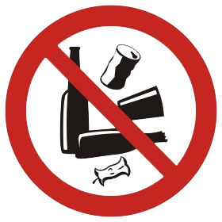

 ODPADY TO NIE ŚMIECI –
TO SUROWCE
Dzień bez Śmiecenia to idea, która jest efektem porozumienia młodzieży z kilkunastu krajów współdziałających w ramach międzynarodowego programu „Europejski Eko-Parlament Młodzieży”. Za to przedsięwzięcie odpowiada PRO EUROPE (podmiot zrzeszający działające w ramach systemu Zielonego Punktu organizacje odzysku). W naszym kraju obchodom święta patronuje Rekopol. Jest to jedyna w Polsce organizacja odzysku opakowań założona przez przedsiębiorców, którzy wprowadzają na nasz rynek produkty w opakowaniach.